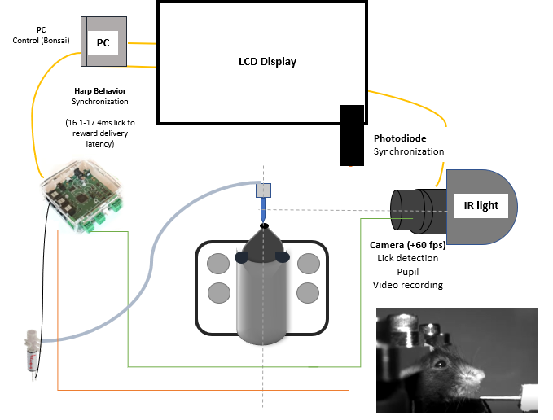
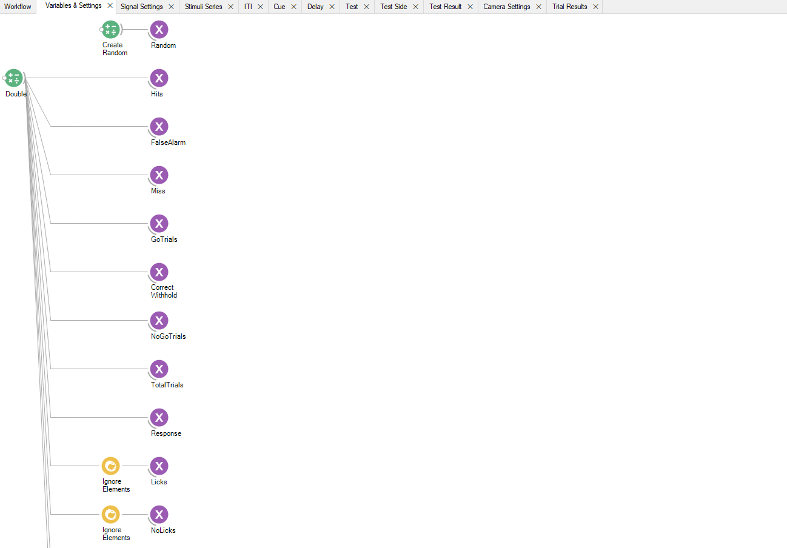
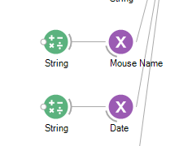
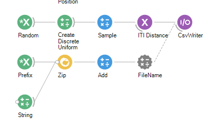
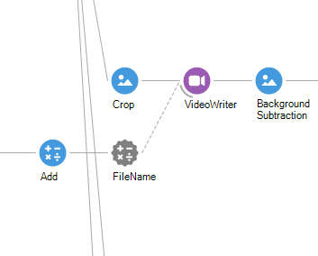
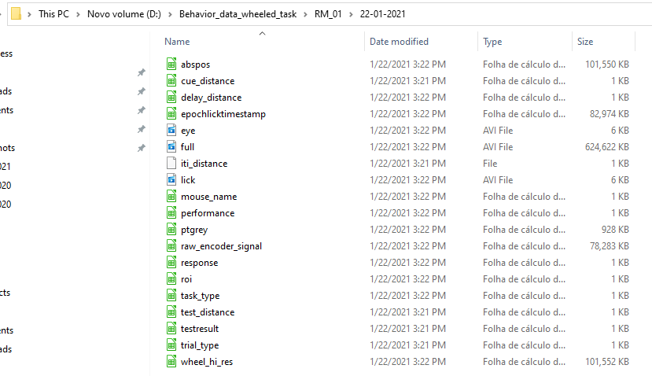

This is the page with a detailed description of the rigs used in the mouse room to train mice in visual expectation tasks.
The general structure of the rig is presented in the figure. The mouse is in the center, on top of the wheel. In the front, a screen is centered on the mouse's snout, at aprox. 17cm from the mouse. There's a camera on the right with an infrared (IR) light above it. On the center of the wheel there is an analog encoder. Right in front of the mouse, a spout for reward delivery.
Outside the rig there is the Harp Behavior board, where the camera and the water valve connect.
The screen is a Adafruits 10.1" Display (HDMI 4 Pi - 10.1" Display 1280x800 IPS - HDMI/VGA/NTSC/PAL). It's connect the the computer's GPU. It duplicates the main screen so if you do something on the computer while running the task, it might affect what's presenting on the screen during the trial. So, it's better to don't use the computer while running a task.
The wheel is an acrylic 3D-printed in-house. It's connected to an analog encoder (MAE3 Absolute Encoder, Analog 10-Bit, 6mm Bore, .500" Shaft Length, .750" Bolt Circle, Bulk Packaged)
The camera (Chameleon3 USB, CM3-U3-13Y3C-S-BD) records videos and is used for lick detection. It's frame rate is controlled by the Harp Behavior board. You can change the settings of the camera using the FlyCap software (downloaded here).
The IR Light serves to get a better image quality on Mono mode camera. Neither humans nor mice see the light coming from the lamp and it's used to be able to record video in a dark environment. It should be pointed directly to the mouse's snout.
Bonsai is a reactive programing framework that allows hardware control and live data acquisition. It's design is intuitive and the framework was built by a CCU PhD student called Gonçalo Lopes.
BONSAI GOOGLE GROUP. Great for posing questions and issues. The community is very responsive and helpful.
Workflow contains the several components of the code that controls the hardware and acquires the data. Next, details of each main section are described.

In the variables and settings workflow, all the main variables of the task are declared, such as the number of total trials and the epoch (0 (iti),1 (cue), 2 (delay), 3 (test))
In signal settings, the signal coming from the encoder is processed and integrated in the visual stimuli. The raw signal of the encoder oscilates between 0 and 5V. Here, these values are converted between 0 and 60cm (full wheel perimeter) and absolute distance covered by the mouse.
In screen settings, all things related to the screen are configured. The frames and timestamped and registed with HarpBehavior.
Stimuli series contains the epochs of the task and it's configurations. Here, you control the stimulus settings such as position, contrast and spatial frequency. You can also set the distance for each epoch, the cueing configuration (true or false cue) and reward delivery.
In camera settings, the video recording is set and the lick detection is implemented. Also, a separate video is recorded for the mouse's pupil.
In Trial results, the data from the trial is processed and performance is calculated.
Calibrate water valve by running the Valve Calibration workflow. When workflow finishes running, calculate the amount of water for each reward (should be around 3ul)
Choose the appropriate task code, depending on the stage of training the mice. The name of the file is suggestive of the type of task it is.
On Workflow seperator, change the mouse name and the date of the session.

Within stimuli series, set the distances for each epoch within the node for each epoch. Set the upper and lower limit in the "Create Discrete" Uniform node before the Behavior Subject for each epoch.

Place the mouse inside the rig and start the trial.
Check the ROI of the lick detection crop and adjust so that the tongue passes through the region and a lick is detected. You can also adjust the threshold for detection in the Threshold node below.

After terminating the sessions, check within the mouse's name folder for the folder with the trials date to see all the data stored as csv and videos.
